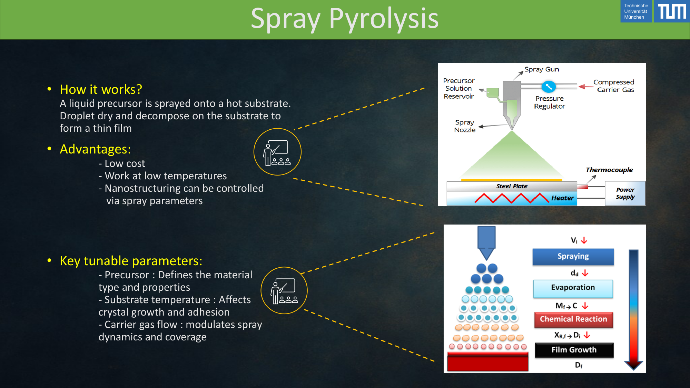
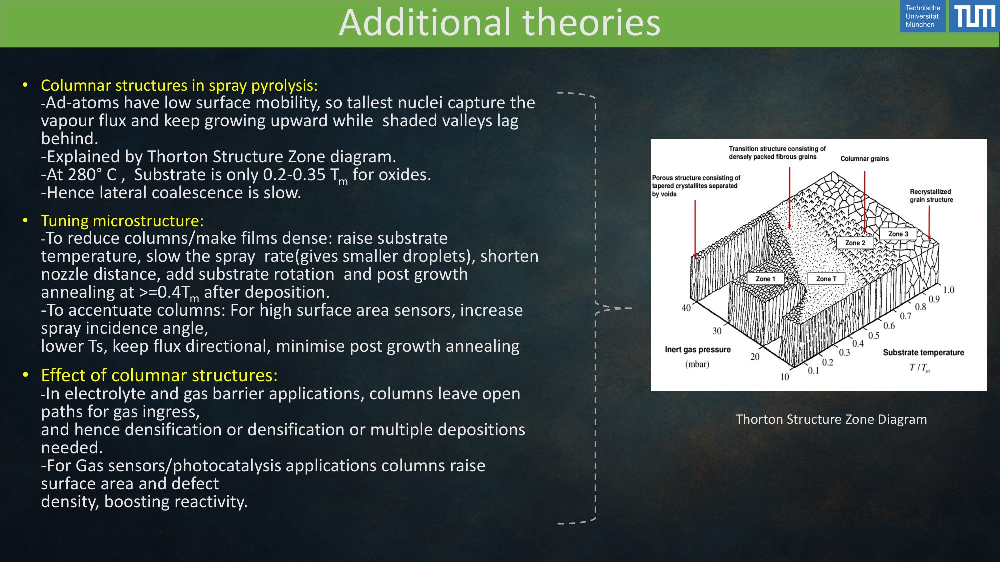
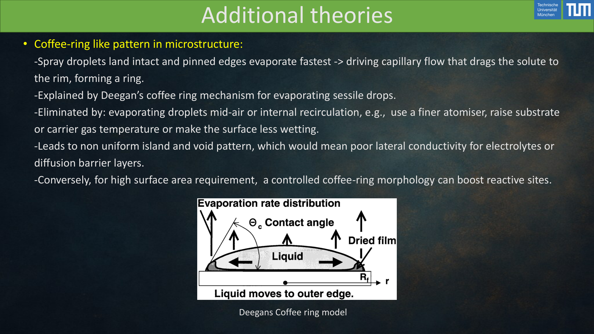
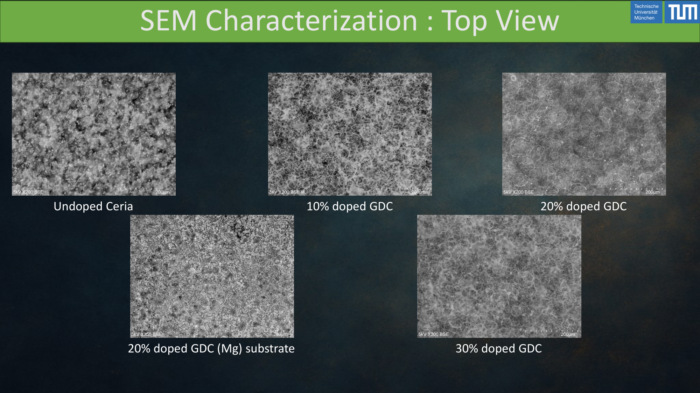
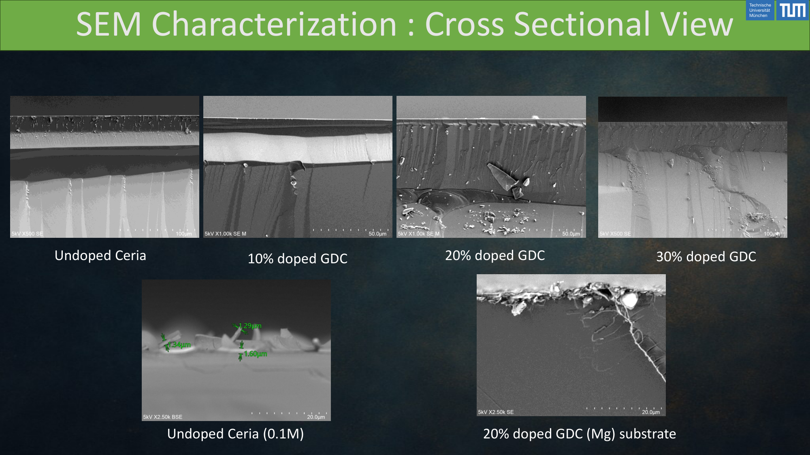
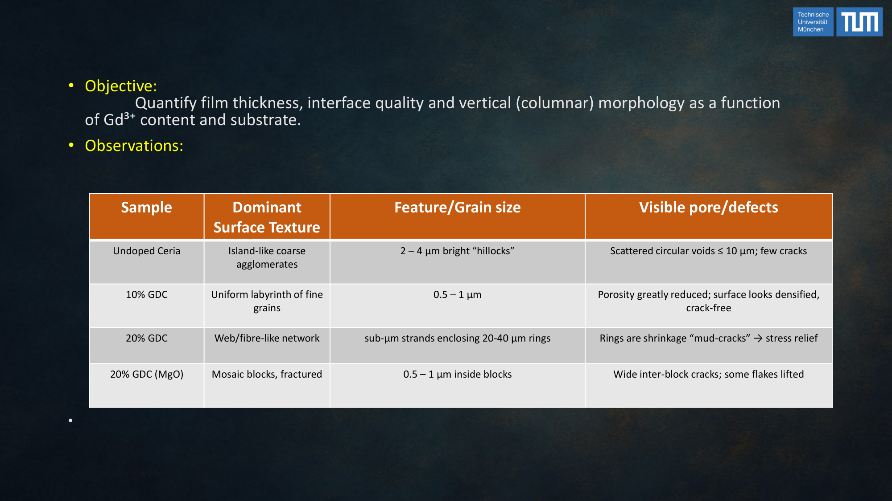

Case study · Thin-film materials · TUM Internship
GDC thin films via spray pyrolysis.
Processing-parameter study of nanostructured gadolinium-doped ceria films for solid-oxide fuel-cell electrolytes — correlating substrate temperature, solvent chemistry, and flow rate with dense, crack-free microstructure.
Problem
Gadolinium-doped ceria (Ce0.9Gd0.1O1.95, "GDC") is one of the best-performing intermediate-temperature solid-oxide-fuel-cell electrolyte materials, but the electrochemical performance is dominated by film microstructure — dense, pinhole-free, well-adhered films with submicron grains. Spray pyrolysis is an attractive low-cost, scalable deposition route but it has a notoriously narrow process window: too cold and the film cracks from trapped solvent (the Deegan "coffee-ring" regime); too hot and the droplets decompose in flight and deposit as a loose powder (the Thornton "rain" zone). The internship objective was to locate the dense-film zone in process space and explain why it sits where it sits.
Approach
- Ultrasonic spray pyrolysis rig — nitrate precursor solution atomised onto a heated substrate held on a temperature-controlled stage. Substrate temperature, carrier-gas flow rate, solvent composition (water / ethanol / ethylene glycol blends), and precursor molarity were the controlled variables.
- Thornton zone mapping — films deposited across a temperature sweep so the deposits could be placed on a Thornton-style process-vs-microstructure diagram (smooth dense zone I vs cracked zone II vs porous zone III vs CVD-like zone IV).
- Coffee-ring diagnostics — inspected single-droplet deposits under optical microscopy to separate substrate-wetting effects from bulk-film effects, following Deegan's convective-flow model for droplet drying.
- SEM characterisation — top-view and cross-section imaging to quantify grain size, pinhole density, and through-thickness columnar structure; the grain-size → ionic-conductivity link is the payoff metric in downstream fuel-cell use.
- Adhesion / residual-stress checks — used a simplified Hutchinson–Suo blister/channeling argument to reason about which deposition conditions were producing the observed crack patterns vs. adhesion failure.






Tools & setup
- Ultrasonic spray pyrolysis rig — atomiser, carrier-gas controller, heated substrate stage.
- SEM (secondary + back-scatter) — top-view and fracture cross-section imaging with ImageJ quantification of grain size and pore fraction.
- Profilometry — film thickness and surface-roughness check per condition.
- Solution chemistry — cerium and gadolinium nitrate precursors in water-ethanol-ethylene-glycol blends, formulated for controlled droplet dryout during flight.
Outcomes
- Process window mapped — identified the substrate-temperature / solvent-composition envelope that reliably produced dense, crack-free submicron-grained GDC films. Outside this envelope the failure modes were well-characterised and predictable.
- Failure-mode attribution — coffee-ring and channel-crack patterns traced to solvent-dryout physics, not to any single "process error"; the solvent blend was the most effective lever.
- Reproducible recipe — the final condition set produced the same SEM microstructure class across repeat runs, which is the result that matters for downstream cell fabrication.
The insight that made the project work was recognising that a spray-pyrolysis "process window" is really a microstructure window, and that the correct organising framework was the Thornton zone diagram overlaid with Deegan droplet physics — not a one-dimensional temperature sweep.
Validation
Microstructure classifications were cross-checked between the SEM operator's read and ImageJ grain-size histograms. Film thickness from profilometry agreed with cross-section SEM within expected instrument tolerance. Where a condition straddled two Thornton zones, repeat runs were performed and the variability itself was reported — films near the window edge were inherently more scatter-prone, which was important information for later cell-fabrication planning.
Lessons learned
- Thin-film quality is non-monotonic in substrate temperature — past a certain point hotter is worse, not better. Zone-diagram thinking kept the team from chasing the wrong axis.
- Solvent composition is an underused degree of freedom. Small ethanol/glycol additions changed the dryout behaviour enough to move a failing recipe into the dense-film window without changing the precursor chemistry.
- SEM is a microstructure diagnostic, not a film-quality diagnostic in isolation — pairing it with profilometry and a droplet-physics argument was what made the conclusions defensible.
Artifacts
- TUM internship presentation — "Development of Nanostructured GDC Thin Films via Spray Pyrolysis".
- Annotated SEM image set (top-view and cross-section).